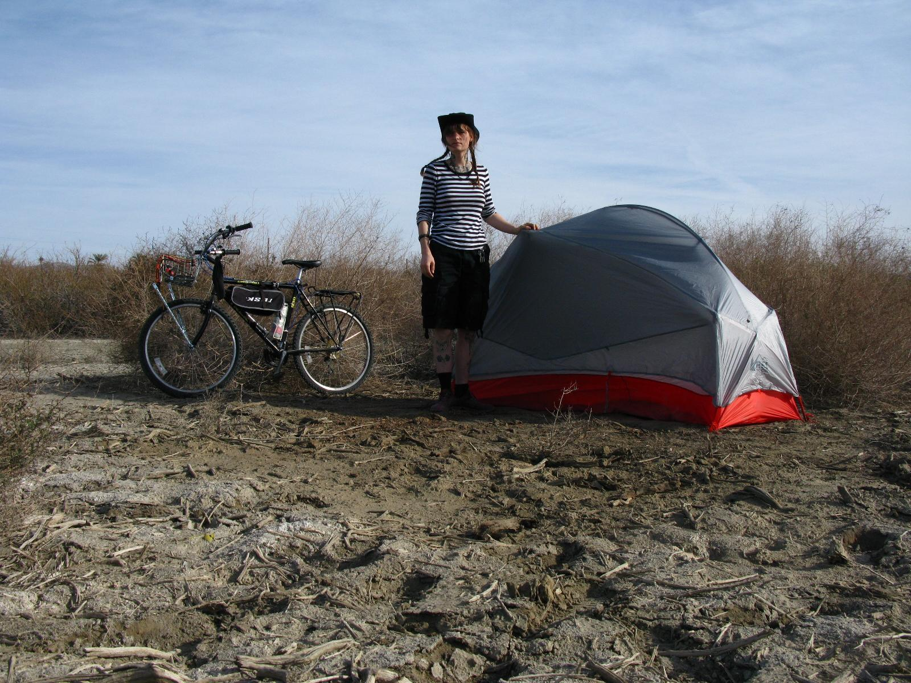

Sarah Borup
Applied Math 2023
Hello! My name is Sarah, I'm a soon to be hardware engineer, vintage electronics hoarder, cyclist, and motorcycle wrencher.
I am a long time bay area resident soon relocating to the East coast where I will be missing the mountains but savoring the brick and snow of Boston. I love hitting avoid highways and traveling as far as possible. I'm working on recording some of the ensuing experiences that follow. You can read my news letter here : passwithcare
Here are my favorite places to eat in my current home of Berkeley California:
- Lois the Pie Queen
- Ethiopean Restaurant
- Taco Bell

Reading response:
- This article suggests that we pay closer attention to the way the apps we use are designed in order to become better designers ourselves. The article points to some key things to take note of when thinking critically about an app. I in particular learned how much text treatment affects the expereince of an app.
- I in particular liked the discussion of AirBnB's app and how it prepopulates the search feild to catch the users imagination and interest. I wonder what making these decisions looked like on the product design level. I personally dont like this style, and so I wonder what this means about me as a consumer.
- I liked: "Next time you’re sitting in a Lyft or waiting on a friend, open up an app and think through the reasons why the designers chose to design it that way." I think this is a really great approach and I look forward to doing this more!
- Rating: 7.
I liked the idea, but I thought the examples didnt fully substantiate the point and didnt offer a very diverse set of products.